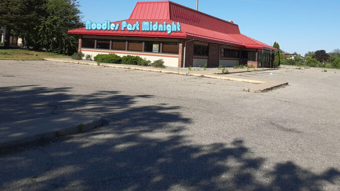

Welcome to Noodles Past Midnight!
Step into flavor after hours at Noodles Past Midnight -- the cozy noodle restaurant that is open late and loved by everyone who craves bold, comforting food.
At Noodles Past Midnight:
you will find a delicious menu centered around handcrafted noodles served in hearty broths,
spicy stir-fried bowls, and creative fusion dishes. From rich, slow-simmered tonkotsu ramen to vibrant veggie lo mein and tangy sesame cold noodles,
there is something for every taste. They also serve flavorful sides like gyoza, crispy spring rolls, and refreshing bubble tea drinks to pair with your meal.
The vibe here is relaxed and welcoming -- a place where night owls, students, and friends gather long after dinner hours to share good food, good company,
and late-night laughs.
A Fresh Start After a Fire
Before this location was Noodles Past Midnight, there was place everyone loved to go to in the same neighborhood that was a local favorite.
Unfortunately, that building was destroyed in a fire a few years ago. No one was hurt, but the damage was serious enough that the original
business could not reopen. We moved in to where they closed left off and Noodles Past Midnight was born!

Location After The Fire
After the fire burnt down the old place, we rebuilt in the style of it and updated the safty messures to make sure a fire wouldn't happen under our control again.
